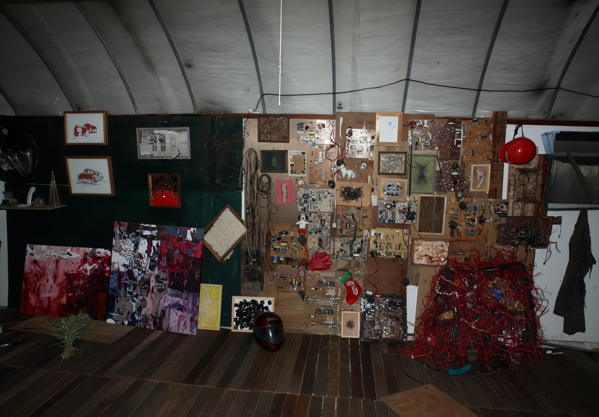

Flowing behind
혜자 회화展
2006_1116 ▶ 2006_1130

후원 : 경기문화재단
초대일시_2006_1116_목요일_05:00pm
보충대리공간 스톤앤워터
경기도 안양시 만안구 석수2동 286-15번지 2층
Tel. 031_472_2886
www.stonenwater.org
경계와 그 이면 ● 서울과 경기도의 경계에 위치한 작가의 작업실 주변은 여느 외곽들과 마찬가지로 광폭한 개발과 전근대의 자연경관, 새롭게 밀려드는 도시화와 가장 본능적이고 원시적인 농경 삶의 향수들이 접점을 이루고 있다. 그곳에 사는 사람들은 급변하는 추이와 익숙한 삶의 관성 사이에서 기묘한 절충과 적응, 기이한 접목과 응용으로 자기에게 주어진 새로운 삶과 환경을 받아들이고 있다. 목숨을 연명하고 달라진 변화에 적응하기 위한 생존이 어떻게 공간을 둘러싸고 진행되고 있는지를 스펙타클하게 보여주는 전시적 공간이기도 하다. ● 사실 그 같은 풍경은 한국이라는 지역에서 누구나 겪어온 폭력적인 근대화의 상처로 인해 발생한 익숙한 장면들이다. 그 황량하고 생경한 풍경은 이질적인 것들의 혼재와 기존의 정체성 자체를 지속해서 지워나가는 혼돈으로 가득해 생존을 유지해온 그간의 생의 리듬을 커다란 커브로 낙차 시킨다. 바로 그러한 마을 한 켠에 마련된 작가의 작업실은 무언가를 재배해 가까운 도시로 팔려나갔을 식물들이 한때 가득했었을 비닐하우스다. 지금도 주변에 가득한 은행나무와 비닐하우스의 신체를 죄다 덮어나가는 담쟁이가 우울한 전원풍경을 유지하고 있지만 한 발짝만 나가면 사람들이 갖다 버린 온갖 인공의 쓰레기와 버려진 가전제품, 급속히 받아들인 첨단 제품들과 세워둘 곳 없는 차들이 여기저기 빼곡한, 어수선하고 신산한 도시 변두리의 전형성을 지니고 있는 곳이다. 도시와 시골의 경계, 근대화와 전형적인 농촌의 사이, 차가운 시멘트와 붉은 흙의 접점, 인공과 자연의 틈이라는 이 장소적 특성은 혜자의 작업에 있어 핵심적인 요소다. 그것은 단지 특정 공간과 풍경에 대한 경계 의식에만 머무는 것은 아니다. 혜자의 작업은 항상 어떤 경계에서 이루어지는 치열한 생성과 혼돈, 그리고 어디론가 흐르고 유동하는, 지향성이 강하게 감지되는, 매우 촉각적인 화면을 보여 왔다. 이미 그 그림자체가 이미지이면서도 반복적인 몸짓이며 재현이자 지극히 추상적인 선의 집적이었고 나무줄기인가 하면 신경다발이나 전선뭉치 같고, 그리는 것이면서 동시에 쓰는 것이기도 한 이중적인, 모호한 영역에서 이루어졌다. 이것이자 저것이며 이것과 저것 사이에서만 존재하고 생성중인 그런 경계적 상황성이 작가의 관심사였다. 어쩌면 그간의 작업은 확실성을 지우고 모호성과 애매성 사이에서 치열한 몸짓만을 적나라하게 드러내는 일이었는지도 모르겠다. 그것은 특정 대상을 미술적으로 다루는 것이라기보다는 삶과 의식의 날선 풍경, 그 자체였다는 생각이다. 아울러 모종의 표현불가능에 대한 자괴감과 그럼에도 불구하고 지속해서 무언가를 재현/표현할 수밖에 없는 모순적인 작업이기도 했다. 그러나 동시에 그 과정에서 작가는 그림의 가장 본질적인 요소인 선을 통해, 선의 가능성과 선을 통한 의미의 전달에도 치중해왔고 이는 근작에서도 여전히 검출된다. 다만 이번 작업은 화면 전체를 색 면과 선으로 채워가면서 형태가 있는 것도 아니고 그렇다고 부정형이 아닌 분명 그 어떤 것을 연상하고 비춰주는데 그럼에도 그 모두를 비껴가는 기이한 왜곡과 번짐만으로 가득한 화면을 보여준다. 여기서 선들은 색과 면 사이로 혈관처럼, 피처럼 스며들고 퍼져나간다. 특정 풍경에 대한 일그러지고 반사된 왜곡된 상들이면서 동시에 서로 다른 것들이 모여 새로운 조합과 관계를 만들어나가는 변종들로 가득한 공간인데 그 공간은 일종의 '포비아'적 공간이다.


작가의 그림은 항상 경계에서 이루어진, 경계를 필요로 한 작업이다. 아마도 자신의 작업실 주변을 관찰하고 이곳을 드나들면서 그런 경계와 관련된 문제의식이 발아되었다는 생각이다. 그리고 이는 늦게 미술을 시작한 자신의 입장과 상황에 대한 은유적 의미도 내포한다. 최근 작가는 새삼 낯설고 이해하기 힘든 작업실 주변 장소와 그 공간에서 살고 있는 사람들에 의해 만들어지거나 버려진 것들에 주목했다. 작가는 자신의 작업실 주변 풍경을 '산만한 아름다움'이라고 칭한다. 정돈되지 않은 어수선한 삶의 욕망과 관습들, 그리고 자생적으로 펼쳐지면서 공간에 기생하는 여러 흔적들은 참혹하고 어설프면서 아름답다. 그런가 하면 어딘지 모르게 서글프기도 하고 황량하다. 작가는 그곳을 매일 지나다니면서 그 이면에 자리한 무언가를 감지한다. 앞서 언급했듯이 자연과 인공이 카오스적으로 얽힌 작업실의 외부(비닐하우스)는 온통 담쟁이로 덮여있다. 담쟁이 넝쿨은 스스로 자생하여 하우스의 표면을 잠식하고 그 피부에 기생한다. 그곳에는 결코 자기를 완성하지 못하고 다만 무한한, 맹목적인 성장만을 지속하는 이 빽빽한 식물들이 마구 얽혀있고 또한 그것들이 새로운 종들로 움트면서 자유로운 접속으로 치닫는 기이한 우주공간을 보여준다. 카오스적인 생성의 공간말이다. 작가의 발끝에는 지독한 자연이 모든 인공적인 것의 모서리로 몰려 악착스레 덤벼들 기색으로 정글화 되어 있다. 비로소 작가의 줄기와 산으로 뒤척이는 나무그림이 기억난다. 강렬하고 섬찟한, 지독한 생명력과 생장력을 보여주는 풀과 나무, 줄기와 이끼류들의 식물성 말이다. 식물은 한 곳에 정주하면서 모든 곳으로 퍼져나간다. 빈틈을 메꾸고 채워나가면서 결국 모든 것을 풀로 덮어버린다. 수많은 생명체들이 치열하게 분열하고 접속하여 생을 영위해간다. 그곳에서 비로소 작가는 존재에 대한 무수한 갈등을 보았고 생명에 대한 사유를 전개해나갔다.


이전의 그림들이 무수한 선들의 난맥을 보여주었다면 근작은 그 선들이 밖으로 외화되어 오브제화 되고 있다. 기계의 부품과 선들이 얽히고 교차하면서 마치 나무줄기와 머리카락, 혈관이나 신경다발처럼 존재한다. 작가는 기계부품 및 전선이 시각적으로 갖고 있는 형태와 색채에 주목했다. 그림과 조각, 이미지와 촉각적인 오브제들이 공존하면서 작가의 작업실 주변 풍경을 암시하는가 하면 경계에서 이루어지는 생명체들의 갈등과 혼돈을 표현하고 있다. 서로 조합하고 해체하는 과정이 함께 얽히면서 그것들의 배치는 또 다른 환경을 만들어가는 이른바 생성의 과정이 작업이 되고 있다. 작가는 서로 이질적인 것들의 관계 맺기를 통해 태어나는 변태적인 것들, 이종교배에서 오는 낯선 존재를 만들어낸다. 그것은 무엇이라고 이름 지을 수 없는 이상한 에너지, 본능만이 흐르는 상태다. 고체적인 것이 아니라 액체적이고 기류적인 것들, 빈 공간을 그저 채워나가기만 할 뿐인 노마드적인 것들이다. 그러니까 무엇인가를 보여주려는 듯하다가 이내 다른 것들과 연쇄적인 접속을 통해 퍼져나가는 카오스적인 풍경 같은 그림, 그러나 무언가가 발생하고 진행되고 있다는 느낌만은 강렬하게 전해주는 그런 그림말이다. 아직 결정되지 않은, 이름지울 수 없는, 다만 하나의 기운과 조짐만이 뜨거운 그림이다. 해서 작가는 자신의 그림에 대해 이렇게 말한다. 나는 이 말이 무척 마음에 든다. 그리고 이 말 안에 작업의 성격과 주제가 모두 담겨있다는 생각이다. ● "나는 새로운 무언가가 나올 것 같은데 아직 나오지 않은, 그것을 추구하는 과정 자체에 매력을 느낀다. 회화가 여전히 매력이 있다면 그것은 정답이 없기 때문이다. 그래서 나의 그림은 새롭게 발생할 것 같은 그 무언가의 예감에 따르는 그림이다."
■ 박영택